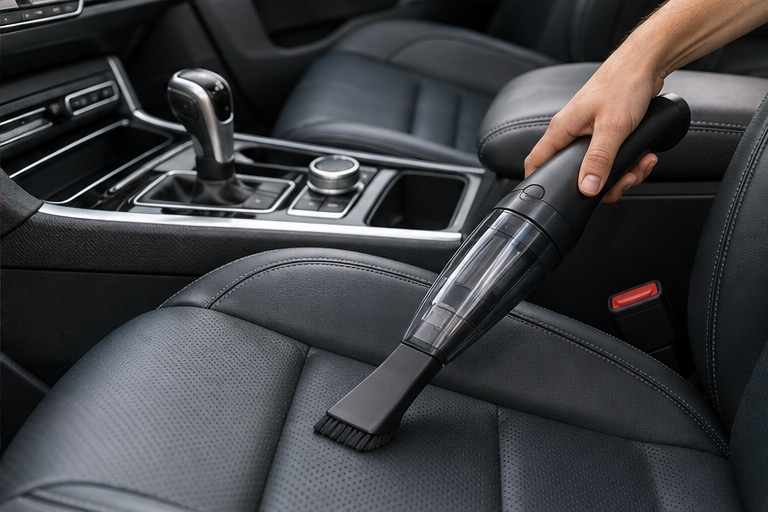

Araç Yıkama
Araç yıkamaya gelmeden önce hazırlık listesi
Kişisel eşyalar, hassas yüzeyler ve istediğiniz işlem kapsamını önceden hazırlamak teslim sürecini kolaylaştırır.
Yazıyı okuYıkama planını sabit bir takvimle birlikte park koşulu, yolculuk ve yüzeydeki birikintileri gözlemleyerek düzenleyin.

Açık otopark, ağaç altı ve kapalı garaj farklı kir türleri oluşturabilir. Kuşadası’nda sahil yolu kullanılan bir araçla çoğunlukla kapalı alanda duran bir aracın ihtiyacı aynı olmayabilir. Tavan, kaput, cam ve alt panelleri düzenli kontrol edin. Yeni yapışmış birikintileri üreticinin bakım talimatına göre zamanında ele alın.
Davutlar veya Güzelçamlı dönüşünde paspas altındaki kumu, bagajdaki ıslak eşyayı ve camdaki kalıntıları kontrol edin. Her gözlem tüm araca kapsamlı işlem gerektiği anlamına gelmez. Hangi alanın ne kadar kirlendiğini not etmek sonraki yıkamanın kapsamını seçmenizi kolaylaştırır. Islak eşyaları araçta bekletmeyin.
Folyo, seramik kaplama veya farklı yüzey uygulamaları varsa ilgili üreticinin temizlik önerisini izleyin. Yıkama planını bu talimatlarla birlikte oluşturun. İVSU GRUP’tan bilgi alırken araç kullanım biçiminizi ve en çok sorun yaşadığınız alanı paylaşın. Bir sonraki yıkama zamanını da aynı kullanım koşullarına göre değerlendirin.
İVSU Blog
Araç Yıkama
Kişisel eşyalar, hassas yüzeyler ve istediğiniz işlem kapsamını önceden hazırlamak teslim sürecini kolaylaştırır.
Yazıyı oku
Araç Yıkama
Kaplama bilgilerini paylaşarak kullanılan yöntem ve ekipmanı aracınızın talimatlarıyla eşleştirin.
Yazıyı oku
Araç Yıkama
Geniş gövde, tavan ve bagaj alanını düşünerek aracınızın yıkama ihtiyacını daha açık tarif edin.
Yazıyı oku